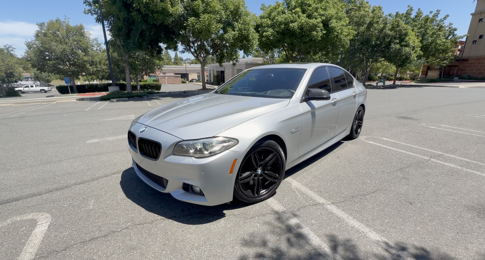

Original damage
Side-swipe collision and damaged exterior panels.
A vehicle-specific guide connecting the rebuild story to available history and buyer disclosures. This is a project record, not a certification or independent inspection.
Side-swipe collision and damaged exterior panels.
Replacement doors and fender sourced for the rebuild.
Headlight lens repair documented in the project.
Rebuild results and ownership impressions shown on the channel.
Information reflects the documented project and historical records available at publication. Current mileage, title documentation, recalls, mechanical condition and transaction eligibility require separate verification. California wholesale dealer restrictions apply.
A 445-horsepower twin-turbo V8 BMW with side-swipe damage, a destroyed LED headlight and a rebuild shaped by one simple idea: save the right parts, replace only what makes sense.

The 550i came in with significant side-swipe damage. The doors and fender were damaged, and the impact also destroyed one of the BMW's expensive LED headlights.
On a car like this, replacing every damaged component at normal used-part prices can change the economics of the entire rebuild. The answer was not to throw parts at it. The first job was finding the right pieces at the right price.
A matching set of doors and a fender showed up through Facebook Marketplace for just $600. That find gave the rebuild a much better path forward without sacrificing the factory equipment already in the car.
The replacement panels still needed real work. Soft-close mechanisms and wiring had to be transferred, followed by fitting and alignment to bring the side of the BMW back together correctly.
The series follows the car from damaged bodywork through the headlight repair and finally back to a complete 445-horsepower V8 sedan.
Replace the damaged doors and fender using the matching $600 Marketplace parts and transfer the original equipment into them.
Move the soft-close hardware and wiring, then work through panel fitment and alignment rather than simply hanging replacement parts.
Instead of replacing the expensive complete headlight, open the damaged assembly and rebuild it around a replacement lens.
Put the completed BMW back together and see what the 445-horsepower twin-turbo V8 550i is like after the rebuild.
The damaged LED headlight could easily have become one of the most expensive individual parts in the project. Rather than buying another complete assembly, the original unit was taken apart and repaired.
The housing was heated to separate the lens, the internal pieces were transferred and a replacement lens costing about $40 gave the light another life. It became one of the clearest examples of what this rebuild was about: repair where repair makes sense.
The body panels are back in place, the headlight is repaired and the 550i has moved beyond being a damaged project. The finished car still carries the reason it was worth saving in the first place: a 445-horsepower 4.4-liter twin-turbo V8.
The final chapter moves beyond the repairs and looks at the car as a whole — how it drives, what makes the F10 550i interesting and whether taking on the wrecked BMW was worth it.
The side-swipe repair story and available BMW build video.
Watch the published BMW 550i build video linked from this project page.
WATCH BMW VIDEO ↗Episodes shown are linked only where an existing project-page YouTube URL is available. Additional episodes will be added after their exact links are confirmed.
The BMW rebuild spans the Marketplace body-panel repair, the LED headlight rescue and the finished-car review.
WATCH THE BUILD ↗ALL BUILDS